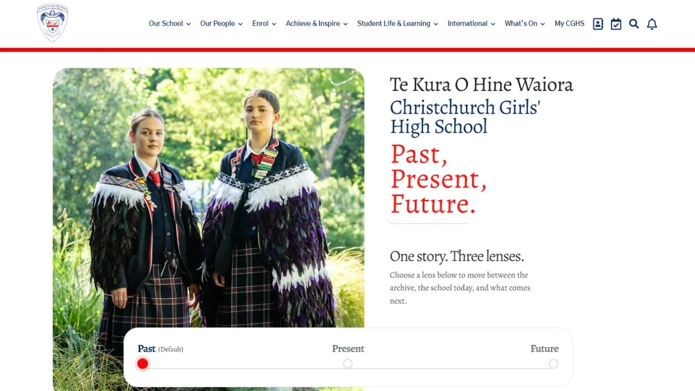

Certificate
Available for work
Code / Creative Design / Automation / AI
Part designer, part developer,
part “wait, I can automate that.”
Diploma
Web Development & Design
Bachelor of ICT
Available for work
Code / Creative Design / Automation / AI
Part designer, part developer,
part “wait, I can automate that.”
Certificate
Diploma
Bachelor of ICT
How I work
I’m Jamie Wilson, a Christchurch-based web developer with commercial experience delivering WordPress and CMS websites across New Zealand and Australia. I work across UI, front-end implementation, integrations, QA and launch support.
View selected workLoading contribution activity…
View GitHub profile01/ Direction
Figma, responsive systems and reusable UI patterns.
02/ Craft
HTML, CSS, JavaScript, PHP, React and WordPress.
03/ Launch
CMS integrations, QA, migrations, DNS, launch and support.
Selected work
A mix of client work, personal projects and ideas I could not leave alone.

01 / Case study
A polished school website designed to help families discover the school and its community.

02 / React PWA
A privacy-first React and TypeScript clipboard manager with local storage, folders, search, drag-and-drop and offline PWA support.

03 / Digital experience
An interactive election experience built to make exploring candidates and choices clearer.

04 / School website
A welcoming, informative website for a school community in the Wairarapa.

05 / School website
A clear, confident digital home for students, whānau and the wider school community.

06 / Game experiment
A playful interactive experiment inspired by the strategy and spectacle of Warcraft III.

07 / Animation
A small interface study exploring motion, atmosphere and a simple day-to-night transition.

08 / School website
A welcoming digital home connecting learners, whānau and the wider Southern Health School community.

09 / Game
A colourful rock-paper-scissors game with playful characters, quick rounds and a live scoreboard.

10 / Interactive story
An interactive school story connecting its archive, the school today and what comes next through three lenses.
The path so far
I built a foundation in web design and software development at Ara, then progressed at Hail from student intern to technical support and website development.
A certificate, diploma and Bachelor of ICT developed my grounding in front-end craft, interaction design and software development.
I researched school apps, evaluated mobile frameworks and built a React Native and Expo prototype with stakeholder input.
I moved into frontline CMS and WordPress support, reproducing bugs, diagnosing live-site issues and documenting repeatable fixes.
Today I deliver responsive WordPress and CMS websites across implementation, integrations, QA, migrations, launch and support.
Curriculum vitae / 2026
Christchurch-based web developer with commercial experience delivering WordPress and CMS websites across New Zealand and Australia.
Hands-on across UI, front-end implementation, integrations, QA, migrations and launch support, with a design-minded approach and AI-assisted workflows that help move work forward.
Download PDF01 / Core strengths
Figma, responsive layout systems, reusable UI patterns, component variants, interaction quality, visual refinement and accessible design decisions.
HTML, CSS, JavaScript, PHP, React, TypeScript, WordPress and performance-minded refinement across responsive websites and web apps.
Hail CMS, Hail Connect, content workflows, publication feeds, Cloudways, LocalWP, WP-CLI, DNS, QA and launch support.
Git, GitHub, VS Code, Notion, HelpScout, structured documentation and AI-assisted workflows for implementation, debugging and design-to-code exploration.
02 / Experience
Hail — Your Communications Partner
Hail — Your Communications Partner
Hail — Your Communications Partner
03 / Education
Ara Institute of Canterbury
Ara Institute of Canterbury
Ara Institute of Canterbury
04 / Toolkit
Figma / HTML / CSS / JavaScript / TypeScript / PHP / React
WordPress / Hail CMS / Gutenberg / Divi / Elementor / Avada
Git / GitHub / VS Code / LocalWP / WP-CLI / Cloudways / WPStaq / DNS
Notion / HelpScout / Codex / AI-assisted design and development